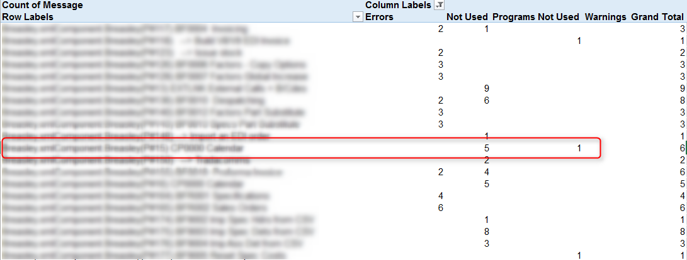

Analyzing the migration log – a different approach
When analyzing the migration log, one would like to be able to aggregate the number of issues per program, just to get the larger picture of the amount of issues that require attention.
Opening the .xml file in Excel and using a Pivot table can help – simply press the “Summarize with Pivot Table” in the Design tab.

In order to see the aggregated values choose the following:
- MessageGroup as the Columns
- Program as the Rows
- Message (which will become Count of Message) as the Values

By filtering the columns to show only Errors, Not Used and Warnings you can see the amount of messages per program:

This is an example of the result:

Lately we added one more type of message to the log – Program not used.
By selecting it in the filter you can see if the program is used or not – this might save some time by deciding not fix issues in non-used programs (or simply deleting them), like in the following example:

Help us improve, Edit this page on GitHub
or email us at info@fireflymigration.com